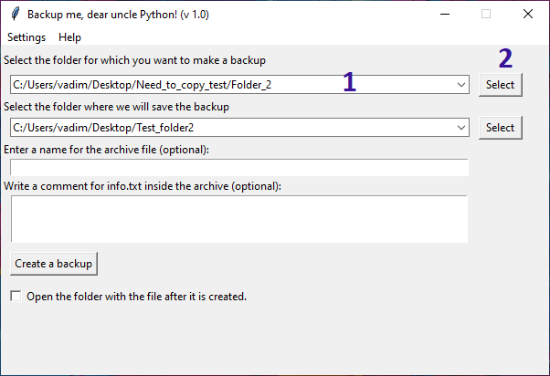
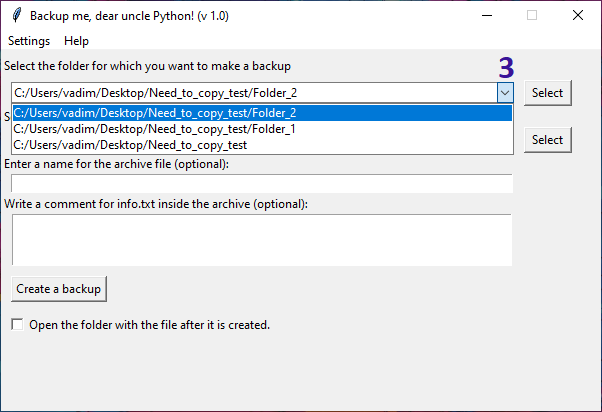
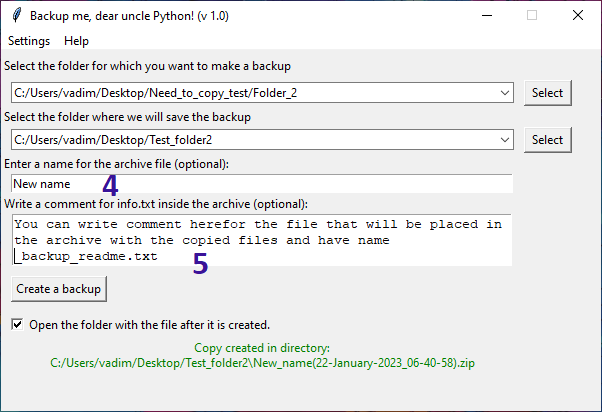
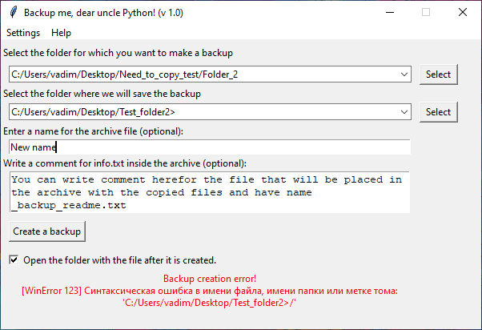

To create a backup copy of your files, copy the path of the folder for which you want to make a backup in the field (1) or select it in the dialog box by clicking the "Select" button (2).

In the same way, select the directory where you want to save the backup.
By clicking on the arrow(3) you can see the last used directories.

By default, the file name looks like the following when saving images:
19-January-2023_22-32-59 , i.e. it has the format dd-Month-yyyy_hh-mm-ss
You can write a prefix to the file name (4), which will be added to the archive name when creating.

In the field (5) you can write a comment to the backup copy, which will be saved in the file _backup_readme.txt and added to the archive with files.
If the archive is created successfully, a message will be displayed.
However, if you use invalid characters in the file save path or in the name prefix, you will see an error message. In this case, to create a backup copy, check the spelling of the file prefix and the path to save it.

You can also upload your backup to your Google Drive storage. To download the archive to, check the box "Upload to Google Drive" (6).
When you first launch the application, you will see that the "Upload to Google Drive" option is not available. (7) To use this feature, you need to log in to Google Drive via Settings -> Google Drive. Next, you need to click on the "Sign in" button and follow the instructions.

After successful authorization, you will be able to upload your backups to your Google Drive cloud storage!
If you have any questions, write to vadimmmz@mail.ru